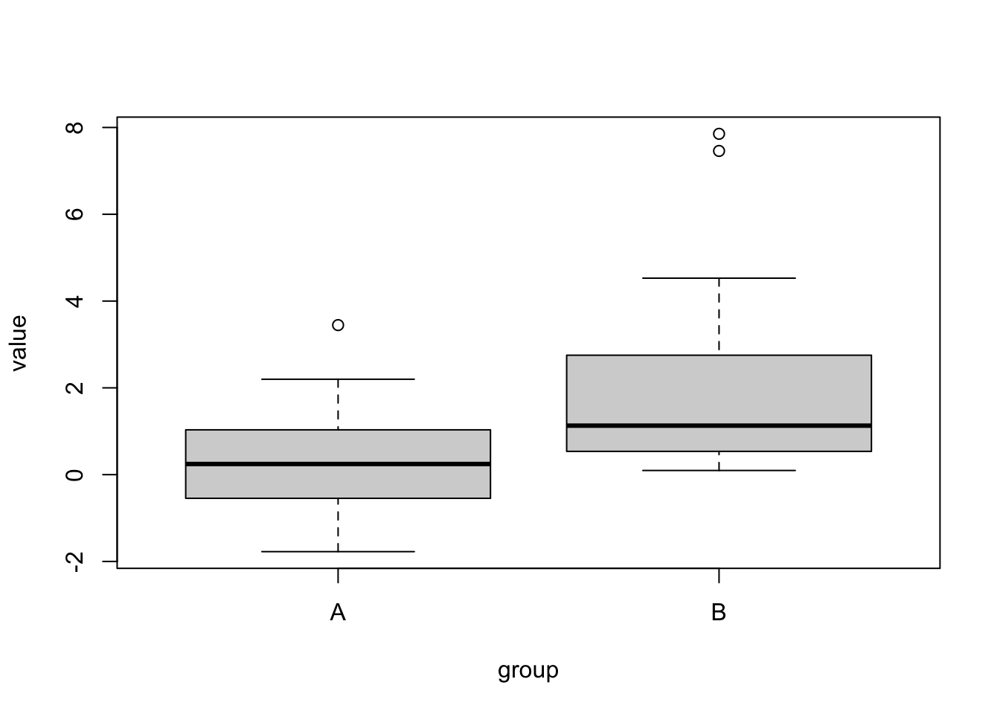

Parametric hypothesis tests usually make a fixed assumption about H0. A non-parametric method to get around this that is used for complicated situations are randomization null models. The idea of these is to shuffle around the data, and thus generate a null distribution
set.seed(1337)# Permutation t-test.# A hand-coded randomization test for comparing two groups with arbitrary distribution.groupA =rnorm(50)groupB =rlnorm(50)dat =data.frame(value =c(groupA, groupB), group =factor(rep(c("A", "B"), each =50)))plot(value ~ group, data = dat)

# We can't do a t-test, because groups are not normal. So, let's create a non-parametric p-value# test statistic: difference of the meansreference =mean(groupA) -mean(groupB)# now, we generate the null expecation of the test statistic by re-shuffling the datanSim =5000nullDistribution =rep(NA, nSim)for(i in1:nSim){ sel = dat$value[sample.int(100, size =100)] nullDistribution[i] =mean(sel[1:50]) -mean(sel[51:100])}hist(nullDistribution, xlim =c(-2,2))abline(v = reference, col ="red")
Null models are used in many R packages where analytical p-values are not available, e.g., in:
library(vegan).{R}
library(bipartide).{R}
8.2.2 Non-parametric p-values: Null Models
Parametric hypothesis tests usually make a fixed assumption about H0. A non-parametric method to get around this that is used for complicated situations are randomization null models. The idea of these is to shuffle around the data, and thus generate a null distribution
set.seed(1337)# Permutation t-test.# A hand-coded randomization test for comparing two groups with arbitrary distribution.groupA =rnorm(50)groupB =rlnorm(50)dat =data.frame(value =c(groupA, groupB), group =factor(rep(c("A", "B"), each =50)))plot(value ~ group, data = dat)
# We can't do a t-test, because groups are not normal. So, let's create a non-parametric p-value# test statistic: difference of the meansreference =mean(groupA) -mean(groupB)# now, we generate the null expecation of the test statistic by re-shuffling the datanSim =5000nullDistribution =rep(NA, nSim)for(i in1:nSim){ sel = dat$value[sample.int(100, size =100)] nullDistribution[i] =mean(sel[1:50]) -mean(sel[51:100])}hist(nullDistribution, xlim =c(-2,2))abline(v = reference, col ="red")
Null models are used in many R packages where analytical p-values are not available, e.g., in:
library(vegan).{R}
library(bipartide).{R}
8.2.3 Non-parametric CI - the bootstrap
Standard (non-parametric) bootstrap
The bootstrap is a method to generate approximate confidence intervals based on resampling the data. Imagine you have some kind of weird data distribution:
We want to calculate the mean and it’s uncertainty. The mean is simple, but what is the uncertainty of the mean? The standard error can’t be used, because this is not a normal distribution. If we don’t know the distribution, we can’t use a parametric method to calculate the confidence interval.
The solution is the bootstrap. The idea is the following: We re-sample from the data to generate an estimation of the uncertainty of the mean. Let’s first do this by hand:
Roughly, this distribution is the confidence interval for the mean for this particular distribution.
In detail, there are a few tricks to correct confidence intervals for the bootstrap, which are implemented in the boot.{R} package. Here is how you would do a boostrap with the boot package. The trick here is to implement the function f().{R}, which must take the data as well as a selection of data points “k” (for example c(1,3,4,5,8,9), or 1:20, etc.) as input, and calculate the desired statistics.
BOOTSTRAP CONFIDENCE INTERVAL CALCULATIONS
Based on 500 bootstrap replicates
CALL :
boot.ci(boot.out = out)
Intervals :
Level Normal Basic
95% (-1.2730, -0.7144 ) (-1.2755, -0.7177 )
Level Percentile BCa
95% (-1.2427, -0.6849 ) (-1.2699, -0.7177 )
Calculations and Intervals on Original Scale
Some BCa intervals may be unstable
Excercise
Solution
Task
Calculate a bootstrapped confidence interval for the mean of this exponential distribution. Compare it to the naive standard error:
set.seed(1234)data =rexp(500)
Solution
Jacknife
An alternative to the bootstrap is the jacknife.
From Wikipedia:
In statistics, the jackknife is a resampling technique especially useful for variance and bias estimation. The jackknife predates other common resampling methods such as the bootstrap. The jackknife estimator of a parameter is found by systematically leaving out each observation from a data set and calculating the estimate and then finding the average of these calculations. Given a sample of size N, the jackknife estimate is found by aggregating the estimates of each N-1-sized sub-sample.
The jackknife technique was developed by Maurice Quenouille (1949, 1956). John Tukey (1958) expanded on the technique and proposed the name “jackknife” since, like a physical jack-knife (a compact folding knife), it is a rough-and-ready tool that can improvise a solution for a variety of problems even though specific problems may be more efficiently solved with a purpose-designed tool.
The jackknife is a linear approximation of the bootstrap.
We call it a parametric bootstrap if we don’t re-sample the data to generate new data, but simulate from the fitted model. Simple example with a linear model:
Call:
lm(formula = y ~ x)
Residuals:
Min 1Q Median 3Q Max
-2.23797 -0.61323 -0.01973 0.59633 2.21723
Coefficients:
Estimate Std. Error t value Pr(>|t|)
(Intercept) 0.94612 0.09693 9.761 4e-16 ***
x 1.97754 0.08546 23.141 <2e-16 ***
---
Signif. codes: 0 '***' 0.001 '**' 0.01 '*' 0.05 '.' 0.1 ' ' 1
Residual standard error: 0.9693 on 98 degrees of freedom
Multiple R-squared: 0.8453, Adjusted R-squared: 0.8437
F-statistic: 535.5 on 1 and 98 DF, p-value: < 2.2e-16
We are interested in getting the confidence intervals for the coefficients of the model:
resampledParameters =function(){ newData = dat newData$y =unlist(simulate(m)) mNew =lm(y ~ x, newData)return(coef(mNew)[1])}bootstrappedIntercept =replicate(500, resampledParameters())hist(bootstrappedIntercept, breaks =50)abline(v =coef(m)[1], col ="red")
The same with the boot.{R} package. We need a statistics:
foo =function(out){ m =lm(y ~ x, out)return(coef(m))}
and a function to create new data
rgen =function(dat, mle){ out = dat out$y =unlist(simulate(mle))return(out)}b2 =boot(dat, foo, R =1000, sim ="parametric", ran.gen = rgen, mle = m)boot.ci(b2, type ="perc", index =1)
BOOTSTRAP CONFIDENCE INTERVAL CALCULATIONS
Based on 1000 bootstrap replicates
CALL :
boot.ci(boot.out = b2, type = "perc", index = 1)
Intervals :
Level Percentile
95% ( 0.7534, 1.1287 )
Calculations and Intervals on Original Scale
Application: Simulated likelihood ratio test
The parametric bootstrap can be used to generate simulated likelihood ratio tests for mixed models. This allows us to test for the significance of variance components without specifying degrees of freedom.
To demonstrate this, let’s simulated some Poisson data under a model with a random intercept, and fit with am appropriate mixed model (M1) and a standard GLM (M0):
m1 =glmer(observedResponse ~ Environment1 + (1|group), data = dat, family ="poisson")m0 =glm(observedResponse ~ Environment1 , data = dat, family ="poisson")observedLR =logLik(m1) -logLik(m0)
The log LR of m1 (the RE model) over m0 is 225, meaning that seing the observed data under m1 is exp(225) times more likely than under m0.
This is expected, given that we simulated the data under an RE model, but is the difference significant?
Well, the LR is so large that we actually wouldn’t need to test. A rough rule of thumb is that you need a log LR of 2 for each df that you add, and here we have an RE with 10 groups, so even if we could 1 df for each RE group, this should be easily significant.
Nevertheless, if we want to be sure, a standard ANOVA as well as AIC have the problem, that df are not exact. We can circumvent this by using a simulated LRT. The idea is the following:
H0: simple model, without RE
Test statistic: M1/M0 or log(M1/M0) = log(M1) - log(M0)
Distribution of test statistic: we use the parametric bootstrap to new data, and fit M0 to this data to generate a distribution under H0
Here is the code to do this:
resampledParameters =function(){ newData = dat newData$observedResponse =unlist(simulate(m0)) mNew0 =glm(observedResponse ~ Environment1, data = newData, family ="poisson") mNew1 =glmer(observedResponse ~ Environment1 + (1|group), data = newData, family ="poisson")return(logLik(mNew1) -logLik(mNew0))}nullDistribution =replicate(500, resampledParameters())
This is the null distribution for the LR - we see that if the data would really not have an RE, we would expect an increase of likelihood for the more complicated model of not more than 4 or so.
hist(nullDistribution, breaks =50, main ="Null distribution log(L(M1) / L(M0))")
However, what we actually observe is an increase of 225. I rescaled the x axis to make this visible.
hist(nullDistribution, breaks =50, main ="Null distribution log(L(M1) / L(M0))", xlim =c(-5,250))abline(v = observedLR, col ="red")
The p-value is 0 obviously
mean(nullDistribution > observedLR)
[1] 0
Simulated LRTs are implemented in a number of R packages, including pbkrtest and RLRsim, but neither of these fully generalizes to all models that you want to compare, so I recommend to use the hand-coded version.
8.2.4 Non-parametric R2 - cross-validation
Cross-validation is the non-parametric alternative to AIC. Note that AIC is asymptotically equal to leave-one-out cross-validation.
For most advanced models, you will have to program the cross-validation by hand, but here an example for glm.{R}, using the cv.glm function:
library(boot)# Leave-one-out and 6-fold cross-validation prediction error for the mammals data set.data(mammals, package="MASS")mammals.glm =glm(log(brain) ~log(body), data = mammals)cv.err =cv.glm(mammals, mammals.glm, K =5)$delta# As this is a linear model we could calculate the leave-one-out # cross-validation estimate without any extra model-fitting.muhat =fitted(mammals.glm)mammals.diag =glm.diag(mammals.glm)(cv.err =mean((mammals.glm$y - muhat)^2/(1- mammals.diag$h)^2))
[1] 0.491865
# Leave-one-out and 11-fold cross-validation prediction error for # the nodal data set. Since the response is a binary variable an# appropriate cost function iscost =function(r, pi =0){ mean(abs(r - pi) >0.5) }nodal.glm =glm(r ~ stage+xray+acid, binomial, data = nodal)(cv.err =cv.glm(nodal, nodal.glm, cost, K =nrow(nodal))$delta)
[1] 0.1886792 0.1886792
(cv.11.err =cv.glm(nodal, nodal.glm, cost, K =11)$delta)
[1] 0.2641509 0.2556070
Note that cross-validation requires independence of data points. For non-independent data, it is possible to block the cross-validation, see Roberts, David R., et al. “Cross‐validation strategies for data with temporal, spatial, hierarchical, or phylogenetic structure.” Ecography 40.8 (2017): 913-929., methods implemented in package blockCV, see https://cran.r-project.org/web/packages/blockCV/vignettes/BlockCV_for_SDM.html.